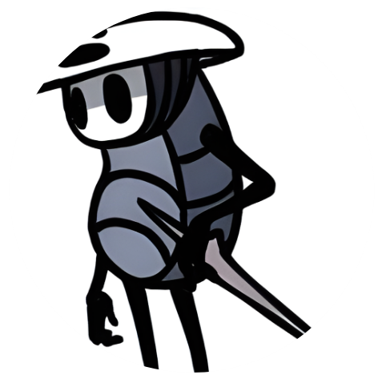
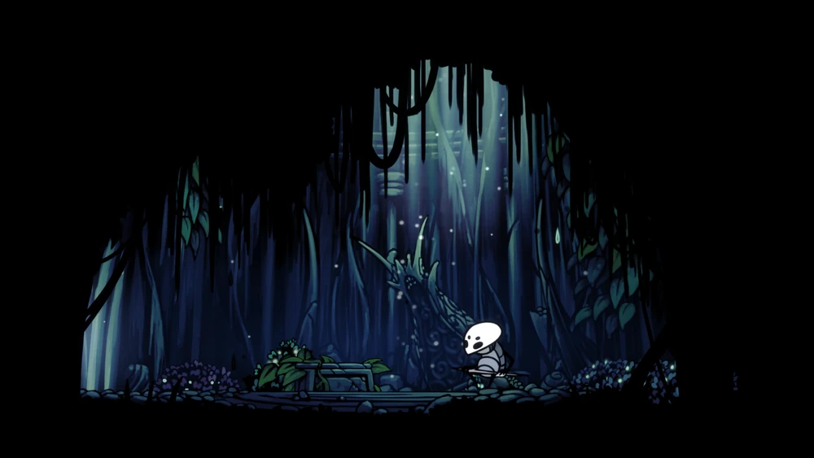

QUIRREL
Aprendiz de Monomon

"Sinto-me atraído a este lugar por tanto tempo. Tantas histórias cheias de maravilhas e horrores. Eu não podia continuar resistindo. Eu tinha que ver com meus próprios olhos."

História

Antes da queda de Hallownest, Quirrel era o aprendiz da Monomon. Quando Monomon virou uma
Sonhadora, ela lhe deu sua máscara, que faria parte de uma proteção adicional aplicada nela
mesma. Quirrel pode ser visto usando sua máscara sobre sua cabeça. Na comic oficial, Quirrel
acabou fora de Hallownest
Hornet Quirrel Comic
Quirrel lutando contra Hornet
Quirrel perde muito de sua memória eventualmente. Ele foi chamado de volta a Hallownest por
Monomon no desejo de remover a proteção colocada nela. Ele teve sonhos de Hallownest; Da Cidade
das Lágrimas, do Cânion da Névoa, da Encruzilhada Esquecida, do Templo do Ovo Negro e do Cavaleiro
Vazio. Após chegar nos Penhascos Uivantes, Quirrel encontra Hornet, a qual ele brevemente luta
contra. Hornet permite a entrada de Quirrel em Hallownest após reconhecer a máscara de Monomon.
Quirrel pode ser inicialmente encontrado no Templo do Ovo Negro, no entanto ele pode ser encontrado
em diversas localizações por Hallownest. Após ajudar o Cavaleiro a matar Monomon removendo o selo
que protegia ela, ele vai ao Lago Azul para ver a fonte da chuva que cai sobre a Cidade das
Lágrimas.
Eventos
Templo do Ovo Negro
No Templo do Ovo Negro
Quirrel é visto encarando o Ovo Negro, curioso, Ele brevemente fala como ele se sente imerso em
Hallownest. Ele sabe que ele tanto o Cavaleiro estão mal equipados para essa perigosa
jornada. Ele explica que muitos viajantes iam até as ruínas e faleciam, e ele rapidamente fala
que se pode tirar proveito disso. Após o Falso Cavaleiro ser derrotado, ele não estará mais
ali.
Lago de Unn
Quirrel é visto sentado em uma pedra perto do Banco, dentro do Templo, polindo seu ferrão. Ele
diz para o Cavaleiro que seu Ferrão parece um pouco desgastado e que ele dificilmente poderá
consertá-lo por estarem bem embaixo da Superfície. Ele sai uma vez que o cavaleiro tenha
adquirido a Garra de Louva-a-Deus.
Estação da Rainha
Dentro da estação, Quirrel pode ser visto sentado na borda de uma plataforma em cima da entrada
da estação do Besouro. Ele fala sobre a correria que aquele lugar devia ter tido durante a era
dourada. Ele sai uma vez que o Cavaleiro consegue a Garra de Louva-a-Deus ou quando o
Cavaleiro sai da Estação da Rainha.
Vila dos Louva-a-Deus
Se o Cavaleiro entrou na parte profunda da Vila dos Louva-a-Deus onde as Lordes Louva-a-Deus
podem ser encontrados, Quirrel poderá ser encontrado na parte leste da Vila dos Louva-a-Deus.
Ele dá uma dica de procurar o Forjador de Ferrões antes de prosseguir para a luta.
Cidade das Lágrimas
Ponderando sobre a chuva na Cidade das Lágrimas
Quirrel pode ser encontrado sentado num Banco perto da saída da primeira construção na Cidade
Das Lágrimas, olhando pela janela. Ele conta ao Cavaleiro que ele se sente atraído pela cidade,
mas está hesitando entrar, não sabendo a razão. Ele menciona a água chovendo infinitamente e
que ele quer ver de onde isso vem antes de sair do Reino. Ele sai se o Cavaleiro derrota ou o
Mestre das Almas ou se encontrado mais tarde no Pico de Cristal.
Ninho Profundo
Ele é visto descansando na Fonte Termal no Ninho Profundo após o Cavaleiro visitar a Linha de
Bonde Inacabada. Ele fala sobre a existência de uma aldeia no Ninho Profundo, lar daqueles que
nunca aceitaram o rei de Hallownest. Ele sai após que o Cavaleiro tenha o escutado.
Pico de Cristal
Quirrel é visto perto da grande janela, olhando para Dirtmouth. Ele também comenta sobre o
triste destino dos mineradores que mineram eternamente. Ele sai uma vez que o Cavaleiro
tenha adquirido o Coração de Cristal ou se encontrado mais tarde na Cidade das Lágrimas.
Fora dos Arquivos da Professora
Ele é visto em pé fora da entrada dos Arquivos da Professora, de alguma forma confuso, se
sentindo atraído por aquele lugar. Após entrar nessa sala, ele não poderá mais ser
encontrado em nenhuma das localizações passadas em Hallownest. Posteriormente ele aparece
durante a luta contra Uumuu para ajudar o Cavaleiro ao quebrar a membrana exterior do chefão,
permitindo que o Cavaleiro o dê dano.
Antes da Monomon
Após checar o tanque em que Monomon está, Quirrel chega. Ele explica a história da Professora e
que ele participava de sua proteção. Ele segura seu chapéu, que é a máscara de Monomon, e desfaz
a proteção para ajudar o Cavaleiro. Se o Cavaleiro ainda não adquiriu o Ferrão dos Sonhos,
Quirrel sugere para o Cavaleiro procurar a Tribo das Mariposas para aprender a entrar na mente
de Monomon e quebrar seu selo. Após Monomon ser morta, ele fica sentado até o Cavaleiro sair
da sala. Ele não usa mais a máscara de Monomon após esse encontro.
Quirrel e o Cavaleiro no Lago Azul
No último encontro com Quirrel, ele é visto sentado perto do Lago Azul, como ele disse que
queria saber de onde a água da chuva da Cidade Das Lágrimas vinha. Ele fala ao Cavaleiro que,
após ver o mundo duas vezes, ele finalmente se sente em paz, e ele está agradecido por poder ver
a beleza do lugar novamente.
Após a conversa, a conquista Testemunha é recebida e o cavaleiro pode escolher sentar ao lado
dele em silêncio.
Após sair da sala, Quirrel desaparece, Seu ferrão pode ser visto fincado no chão perto do Lago.
Imagens
